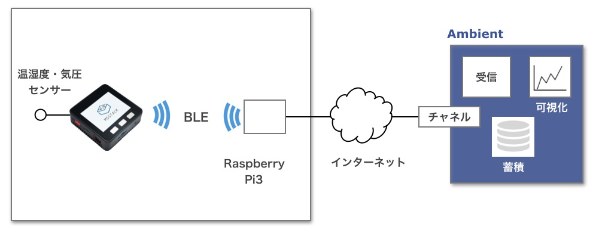
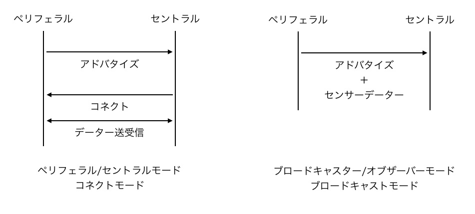
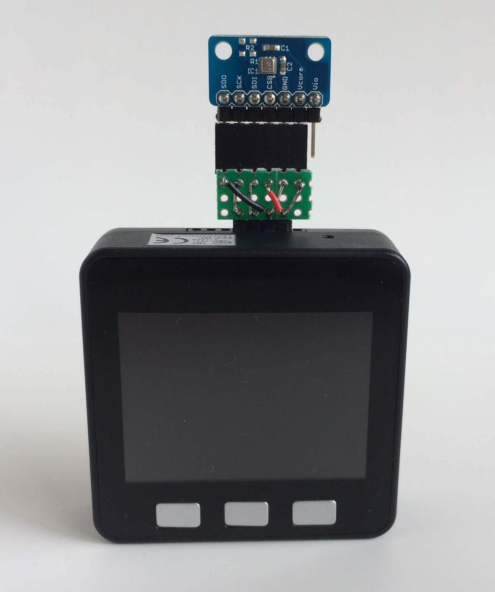
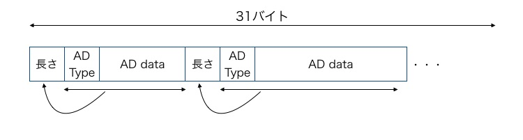
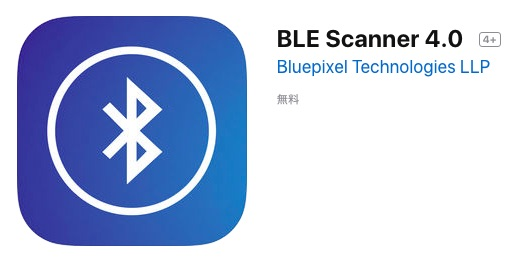
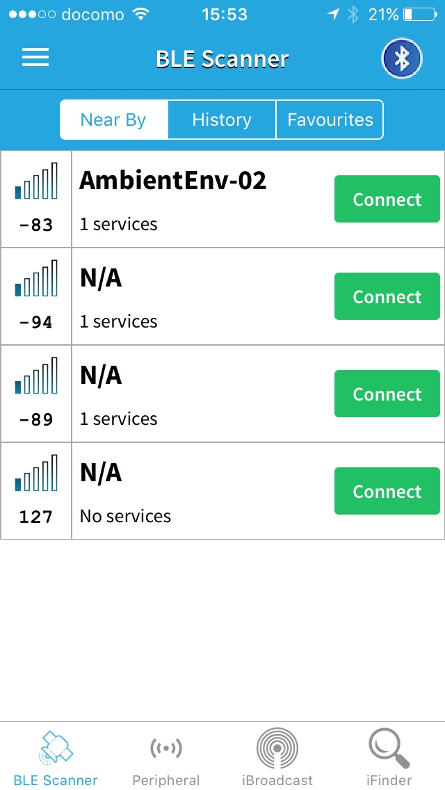
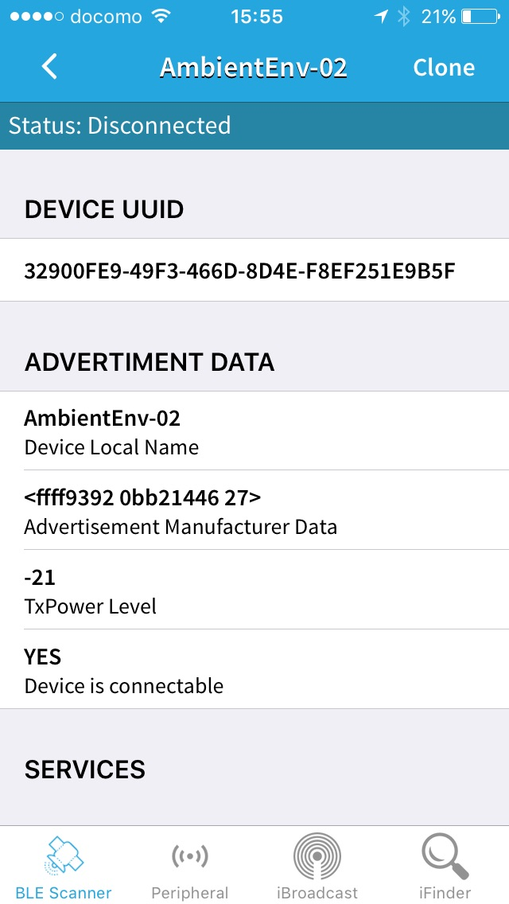

<!doctype html>
<html class="no-js" lang="">
<head>
<meta http-equiv="Content-type" content="text/html; charset=UTF-8">
<meta http-equiv="x-ua-compatible" content="ie=edge">
<meta name="description" content="M5StackBLEPeriph - LetsIoT">
<meta name="viewport" content="width=device-width, initial-scale=1">
<title>M5StackでBLE環境センサー端末を作る - AmbientでIoTをはじめよう</title>
<link rel="shortcut icon" href="/favicon.ico" />

<link rel="stylesheet" href="https://maxcdn.bootstrapcdn.com/bootstrap/3.3.7/css/bootstrap.min.css" integrity="sha384-BVYiiSIFeK1dGmJRAkycuHAHRg32OmUcww7on3RYdg4Va+PmSTsz/K68vbdEjh4u" crossorigin="anonymous">
<link rel="stylesheet" href="https://maxcdn.bootstrapcdn.com/bootstrap/3.3.7/css/bootstrap-theme.min.css" integrity="sha384-rHyoN1iRsVXV4nD0JutlnGaslCJuC7uwjduW9SVrLvRYooPp2bWYgmgJQIXwl/Sp" crossorigin="anonymous">

<style>
    body {
        /* padding-top: 20px;
        padding-bottom: 20px; */
    }
    .navbar {
        margin-bottom: 60px;
        height: 140px;
    }
    .navbar-brand img {
        padding: 40px 0;
    }
    .footer {
        margin-top: 60px;
        background: #F7F7F7;
    }
    .footer ul {
        padding-top: 35px;
        padding-left: 0px;
        margin-left: 0px;
    }
    .footer li {
        line-height: 25px;
        padding-left: 0px;
        margin-left: 0px;
        list-style: none;
    }
    .footer a {
        color: #999;
        font-weight: bold;
    }
    .footer #copyright {
        clear: left;
        margin-top: 35px;
        margin-bottom: 20px;
    }
    .alert-info {
        margin-top: 70px;
        background-image: none !important;
    }
    h2 {
        margin-top: 40px;
    }
    .submenu li {
        margin-bottom: 6px;
    }
</style>
</head>
<body>

<div class="navbar navbar-default">
    <div class="container">
        <div class="container-fluid">

            <div class="navbar-header">
                <a class="navbar-brand" href="https://www.switch-science.com/">
                    
                </a>
            </div>

          </div>
    </div>
</div>

<div class="wrap">
    <div class="container">

        <div class="row">
            <div class="col-lg-8 col-sm-9 hidden-xs" style="margin-bottom: 20px;">
                <h1>AmbientでIoTをはじめよう</h1>
            </div>
            <div class="col-lg-8 col-sm-9 hidden-xs">
                <p class="text-right">2018年9月25日</p>
            </div>
            <div class="col-lg-8 col-sm-9 hidden-xs">
                <h1>M5StackでBLE環境センサー端末を作る</h1>
            </div>

            <div class="col-sm-9 col-lg-8">
                <p>M5Stackに搭載されているESP32はWi-FiとBluetooth Low Energy(以下、BLE)で通信できます。
                    「AmbientでIoTをはじめよう」の第10回は、温度、湿度、気圧データをBLEで送信する端末を作ります。
                    送信したデーターはゲートウェイで受信して、Ambientに送りますが、それは次回ご紹介します。</p>

                <p>Wi-Fi経由でクラウドに送信する例は「<a href="http://pages.switch-science.com/letsiot/m5stack_arduino/index.html">M5Stackでセンサデータを測定し、クラウドに送る (Arduino編)</a>」をご覧ください。</p>


                <h2 id="structure">全体の構成</h2>

                <p></p>

                <p>M5Stackに<a href="https://www.switch-science.com/catalog/2236/">温湿度・気圧センサBME280</a>を接続して、
                    温度、湿度、気圧を測定し、BLEで送信します。データはゲートウェイで受信してAmbientに送ります。</p>


                <h2 id="blemode">BLEデバイスの動作</h2>

                <p>BLEではセンサ端末をペリフェラル、ペリフェラルからデータを取得する端末をセントラルといいます。
                    スマホから腕時計型の活動量計にアクセスしている場合、活動量計がペリフェラル、スマホがセントラルになります。</p>

                <p>BLE通信では、ペリフェラルが自らの存在を発信(アドバタイズ)します。
                    セントラルはアドバタイジングパケットをスキャンし、自分が必要とするペリフェラルを見つけ、
                    ペリフェラルに接続(コネクト)してデータの送受信をおこないます。
                    このやり取りをペリフェラル/セントラルモードあるいはコネクトモードと呼びます。</p>

                <p>もう一つの通信方法は、ペリフェラルがセンサデータなどをアドバタイジングパケットに載せて送り、
                    セントラルがそれを受信する方法です。ブロードキャスター/オブザーバーモードあるいはブロードキャストモードと呼びます。</p>

                <p></p>

                <p>コネクトモードは双方向通信ができます。
                    ペリフェラルからセンサデータを受け取るだけでなく、セントラルからペリフェラルのモード設定なども行う場合はコネクトモードを使います。
                    コネクトモードでは、コネクトしていない時はペリフェラルはアドバタイジングパケットを発信して、セントラルからのコネクトを待ちます。
                    常にコネクトされるのを待つため、基本的にはDeep Sleepできません。</p>

                <p>一方、ブロードキャストモードのペリフェラルは一定時間アドバタイジングパケットに載せてデータを発信し、
                    後はDeep Sleepするという間欠動作をすることができ、消費電力を低く抑えられます。</p>

                <p>今回はブロードキャストモードで動作するセンサ端末を作ります。</p>

                <h2 id="hardware">センサ端末のハードウェア</h2>

                <p>M5StackとBME280を使うセンサ端末は「<a href="http://pages.switch-science.com/letsiot/m5stack_arduino/index.html">M5Stackでセンサデータを測定し、クラウドに送る (Arduino編)</a>」で開発したものと同じです。
                    M5StackとBME280は次の表のように接続します。</p>

                <div align="center">
                    <table class="table table-bordered" style="font-size:0.9em; width: 60%;">
                        <thead>
                            <tr align="center"><th style="width: 50%;">M5Stack</th><th>BME280モジュール</th></tr>
                        </thead>
                        <tbody>
                            <tr align="center"><td>GND</td><td>SDO</td></tr>
                            <tr align="center"><td>SCL(22)</td><td>SCK</td></tr>
                            <tr align="center"><td>SDA(21)</td><td>SDI</td></tr>
                            <tr align="center"><td>3V3</td><td>CSB</td></tr>
                            <tr align="center"><td>GND</td><td>GND</td></tr>
                            <tr align="center"><td>3V3</td><td>Vcore</td></tr>
                            <tr align="center"><td>ー</td><td>Vio</td></tr>
                        </tbody>
                    </table>
                </div>

                <p>前回はジャンパワイヤでM5StackとBME280をつなぎましたが、今回は小さな基板でつないでみました。</p>

                <p></p>

                <p>M5Stackの概要、M5Stackを使うためのArduinoの環境設定、M5Stackの動作確認については
                    「<a href="http://pages.switch-science.com/letsiot/m5stack_arduino/index.html">M5Stackでセンサデータを測定し、クラウドに送る (Arduino編)</a>」をご覧ください。</p>


                <h2 id="check">ハードウェアの動作確認</h2>

                <p>マイコンとセンサーを接続したら、動作を確認します。</p>

                <p>動作確認プログラムも含めて今回のプログラムはGithubに公開しています。</p>

                <ul>
                    <li>AmbientDataInc/EnvSensorBleGw</li>
                </ul>

                <p>このページの右上の「Clone or download」>「Download ZIP」をクリックして、ZIPファイルをダウンロードし、
                    適当な場所で展開します。この中の</p>

                    <ul>
                        <li>src/envSensor_esp32/BME280_test/BME280_test.ino</li>
                    </ul>

                <p>が動作確認プログラムです。</p>

                <p>このプログラムをArduino IDEでビルドします。
                    ビルドの際、Arduino IDEのツール > ボードの設定を「M5Stack-Core-ESP32」に設定することを忘れないでください。</p>

                <p>プログラムを実行して、5秒ごとにシリアルとLCDに温度、湿度、気圧が表示されればM5StackとBME280の接続はOKです。</p>


                <h2 id="advertisingdata">アドバタイジングデータ</h2>

                <p>ブロードキャストモードはセンサデータをアドバタイジングパケットの中のアドバタイジングデータという領域に載せて発信します。
                    アドバタイジングデータは次のような構造の最大31バイトのデータで、
                    <a href="https://www.bluetooth.com/ja-jp/specifications/bluetooth-core-specification" target="_blank>Core Bluetooth 4.0 Core Specification</a>で定義されています。</p>

                <p></p>

                <p>AD Typeは1バイトのデータで、AD Dataの内容を定義します。
                    この中にManufacturer Specific(0xFF)という値があり、
                    AD Dataとして2バイトの企業IDとその企業が定義するデータが入れられます。</p>

                <p>企業ID0xFFFFがテスト用に用意されているので、これを使い、次のようなアドバタイジングデータを定義しました。</p>

                <div align="center">
                    <table class="table table-bordered" style="font-size:0.9em; width: 60%;">
                        <tbody>
                            <tr><td>0</td><td>長さ</td><td>10</td></tr>
                            <tr><td>1</td><td>AD Type</td><td>0xFF (Manufacturer Specific)</td></tr>
                            <tr><td>2</td><td>Manufacturer ID (low)</td><td>0xff</td></tr>
                            <tr><td>3</td><td>Manufacturer ID (high)</td><td>0xff</td></tr>
                            <tr><td>4</td><td>Sequence</td><td>シーケンス番号</td></tr>
                            <tr><td>5</td><td>温度 (low)</td><td>摂氏温度(℃)を100倍した整数値</td></tr>
                            <tr><td>6</td><td>温度 (high)</td><td></td></tr>
                            <tr><td>7</td><td>湿度 (low)</td><td>相対湿度(%)を100倍した整数値</td></tr>
                            <tr><td>8</td><td>湿度 (high)</td><td></td></tr>
                            <tr><td>9</td><td>気圧 (low)</td><td>気圧(hPa)を10倍した整数値</td></tr>
                            <tr><td>10</td><td>気圧 (high)</td><td></td></tr>
                        </tbody>
                    </table>
                </div>

                <p>温度、湿度を100倍、気圧を10倍して整数にしてアドバタイジングデータとして送信し、
                    受信側で元に戻すことで、小数点以下2桁、1桁の浮動小数点を2バイトに収めています。</p>


                <h2 id="program">プログラム</h2>

                <p>プログラムはArduinoで開発します。ESP32のArduinoにはBLEモジュールが提供されており、
                    プログラミングは「<a href="https://github.com/nkolban/esp32-snippets/blob/master/Documentation/BLE%20C%2B%2B%20Guide.pdf" target="_blank>BLE C++ Guide</a>」
                    という資料に解説されています。</p>

                <p>今回開発したプログラムはGithubに公開した中の次のものです。</p>

                <ul>
                    <li>src/envSensor_esp32/BLE_BME280_bcast/BLE_BME280_bcast.ino</li>
                </ul>

                <p>BLEの端末側プログラムの主な流れは次のようになっています。プログラム中のコメントを見ると流れが分かると思います。</p>

                <script src="https://gist.github.com/TakehikoShimojima/254b65ca82bbe3674aaef62fc40973fb.js"></script>

                <p>デバイスを初期化し、サーバを生成し、センサを読んで値をアドバタイジングデータにセットし、T_PERIOD秒アドバタイズします。
                    その後、S_PERIOD秒休止します。休止中の消費電力を下げるために休止中はDeep Sleepします。
                    Deep Sleepから復帰するとプログラムは先頭から実行され、次のセンサデータを読み、T_PERIOD秒のアドバタイズをおこないます。</p>

                <p>センサを読んで値をアドバタイジングデータにセットする部分は次のようになっています。</p>

                <script src="https://gist.github.com/TakehikoShimojima/465738be65eb0043cb2fc0f1f185c756.js"></script>

                <p>2行目でBME280のデータを読み、13〜23行目でアドバタイジングデータを作り、
                    25、26行目でアドバタイジングデータを設定しています。</p>

                <p>アドバタイジングデータにはシーケンス番号を入れています。
                    シーケンス番号をRTCメモリに定義することで、Deep Sleepの間も値を保持し、1ずつ値を増加させています。</p>

<p><pre>
    RTC_DATA_ATTR static uint8_t seq;
</pre></p>

                <h2 id="programcheck">動作確認</h2>

                <p>プログラムをビルドして、端末にダウンロードして動かします。</p>

                <p>動作確認にはスマホアプリ「BLE Scanner」を使うのが便利です。</p>

                <p></p>

                <p>「BLE Scanner」を立ち上げると、スキャンして見つかったBLEデバイスが表示されます。</p>

                <p></p>

                <p>プログラムが期待通りに動作していれば、デバイスを初期化した時に引数で指定した名前(“AmbientEnv-02”)のデバイスが表示されます。
                    AmbientEnv-02をタップすると、アドバタイジングデータを確認できます。</p>

                <p></p>

                <p>Manufacturer Data部分に次のようにデータがセットされているのが確認できます。</p>

                <div align="center">
                    <table class="table table-bordered" style="font-size:0.9em; width: 60%;">
                        <tbody>
                            <tr><td>2</td><td>Manufacturer ID (low)</td><td>0xff</td></tr>
                            <tr><td>3</td><td>Manufacturer ID (high)</td><td>0xff</td></tr>
                            <tr><td>4</td><td>Sequence</td><td>0x93</td></tr>
                            <tr><td>5</td><td>温度 (low)</td><td>0x92</td></tr>
                            <tr><td>6</td><td>温度 (high)</td><td>0x0b → 0x0b92 → 2962 → 29.62℃</td></tr>
                            <tr><td>7</td><td>湿度 (low)</td><td>0xb2</td></tr>
                            <tr><td>8</td><td>湿度 (high)</td><td>0x14 → 0x14b2 → 5298 → 52.98%</td></tr>
                            <tr><td>9</td><td>気圧 (low)</td><td>0x46</td></tr>
                            <tr><td>10</td><td>気圧 (high)</td><td>0x27 → 0x2746 → 10054 → 1005.4hPa</td></tr>
                        </tbody>
                    </table>
                </div>

                <p>これでブロードキャストモードのセンサー端末ができました。
                    次回はこのデータを受信してAmbientに送信するゲートウェイを開発します。</p>


                <p style="margin-top: 40px;">この記事は<a href="https://ambidata.io/" target="_blank">アンビエントデーター</a>の下島が担当しました。</p>

            </div>

            <div class="col-lg-push-1 col-sm-3 col-lg-3 hidden-xs" style="margin-bottom: 40px;">
                <div style="float: left; margin-right: 10px;">
                    
                </div>
                <div style="overflow: hidden;">
                    <p>書いた人:下島健彦。<a href="https://ambidata.io" target="_blank">Ambient</a>開発者。アンビエントデーター代表取締役。</p>
                </div>
            </div>
            <div class="col-lg-push-1 col-sm-3 col-lg-3 hidden-xs submenu" style="margin-bottom: 40px;">
                <ul class="nav nav-pills nav-stacked">
                    <li class="open"><a href="index.html">10.M5StackでBLE環境センサー端末を作る</a></li>
                    <ul class="list-unstyled">
                        <li><a href="#structure">全体の構成</a></li>
                        <li><a href="#blemode">BLEデバイスの動作</a></li>
                        <li><a href="#hardware">センサ端末のハードウェア</a></li>
                        <li><a href="#check">ハードウェアの動作確認</a></li>
                        <li><a href="#advertisingdata">アドバタイジングデータ</a></li>
                        <li><a href="#program">プログラム</a></li>
                        <li><a href="#programcheck">動作確認</a></li>
                    </ul>
                </ul>
            </div>
            <div class="col-lg-push-1 col-sm-3 col-lg-3 hidden-xs submenu" id="backnumber">
            </div>
        </div>
    </div>
</div>

<div class="footer">
    <div class="container">
        <div class="row">
            <div>
                <h5>免責事項</h5>
                <p style="font-size:0.8em;">記事は実際に実験をおこなった上で書いていますが、動作を保証するものではありません。また本記事を利用したことにより生じる損害についてスイッチサイエンスおよびアンビエントデーターは一切の責任を負いません。</p>
            </div>
            <div class="col-xs-3">
                <ul>
                    <li></li>
                </ul>
            </div>
            <div class="col-xs-3">
                <ul>
                    <li></li>
                </ul>
            </div>
            <div class="col-xs-3">
                <ul>
                    <li></li>
                </ul>
            </div>
            <div class="col-xs-3">
                <ul>
                    <li></li>
                </ul>
            </div>
        </div>
        <div id="copyright">
            &copy; 2018 Switch Scinece, inc. &copy; 2018 AmbientData, Inc.
        </div>
    </div>
</div>

<script src="https://ajax.googleapis.com/ajax/libs/jquery/1.12.4/jquery.min.js"></script>
<script src="https://maxcdn.bootstrapcdn.com/bootstrap/3.3.7/js/bootstrap.min.js" integrity="sha384-Tc5IQib027qvyjSMfHjOMaLkfuWVxZxUPnCJA7l2mCWNIpG9mGCD8wGNIcPD7Txa" crossorigin="anonymous"></script>

<script>
    $(document).ready(function() {
        $('#backnumber').load('../backnumber.html');
    });
</script>

<!-- Global site tag (gtag.js) - Google Analytics -->
<script async src="https://www.googletagmanager.com/gtag/js?id=UA-4499733-1"></script>
<script>
  window.dataLayer = window.dataLayer || [];
  function gtag(){dataLayer.push(arguments);}
  gtag('js', new Date());

  gtag('config', 'UA-4499733-1');
</script>

</body>
</html>
